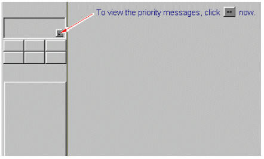
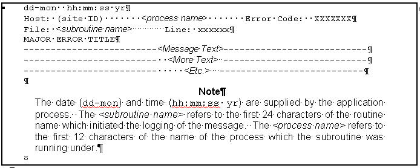

Operating Documentation
Direction 5440000, Rev# 5
Signa HDxt Service Methods
Module Version 1.0, Version Date 4/27/07
Operating Documentation |
This material explains the Signa message log. The message log is a disk file that contains a history, or log, of all errors or messages that have occurred while the Signa system was running.
This section describes the format of messages/errors, and how they are displayed and logged.
Four classes of error codes can occur. Each class is handled in a different manner, as described below.
If the operator's response to a question is incorrect, a standard error message is displayed on the touch screen, along with a list of responses (if appropriate). These errors are not logged.
Soft errors can be recovered by issuing corrective commands without having to interrupt the flow of normal operation (e.g., during reconstruction, an AP error occurs. The reconstruction process can retry the operation with or without notifying the operator). These errors are logged.
This class of errors can be recovered by issuing additional corrective commands, except that the normal flow of operation is interrupted. Since normal flow is interrupted, operator interaction is required. Suppose, for example, that a hardware failure that occurs during data collection aborts the scanning sequence. The fault can be corrected by sending a Reset command to the subsystem but, because the scan was interrupted, the operator must retry or abort the scan. These error messages recommend what action to take; they are logged.
These are the most serious. They have the potential of bringing down a subsystem, or the whole system. All non-recoverable errors require an operator acknowledgement or correction before normal operation can resume. If, for example, an array processor fault exists, and cannot be corrected as described above, the operator is prompted to acknowledge the error. The subsystem is taken out of service, and the system returns to "normal" operation. The scan process is not disabled, but when the process is requested, it checks on whether or not the AP (and other required subsystems) is functional; if not, the process is not allowed. Non-recoverable errors are logged.
| NOTE: | During normal operation, messages are logged that do not report error status. Examples of these include: process output files, termination messages and some types of status. Most of these messages do not have error codes associated with them and they can be ignored. |
There are two priority levels associated with messages/errors: normal and high. These priorities are assigned by the process that generates them, and is used for the purpose of displaying the errors. The definition of priority is given below:
These messages involve safety-related conditions and usually require immediate attention. Priority messages are logged, and require operator acknowledgement or correction. They also override all other messages on the touch screen. (Refer to Section 2- Format of Error Messages on the touch screen.) A typical high priority message is:
<OXYGEN LEVEL LOW IN EXAM ROOM>
These messages include those relating to software/hardware errors, operator errors, recoverable errors, and soft errors.
Normal-priority messages are displayed on a first-come, first-serve basis. High-priority messages are not stacked behind normal-priority messages, but are displayed immediately, in which case, normal-priority messages are then placed on the "More Messages" screen.
The monitor screen has certain areas designated for system error and status reporting. The message area on the monitor screen, in the upper left corner, displays the most recent high-priority message.
See the User Interface Tutorial for an example of what the message log looks like on the Signa Horizon LX system.
Clicking on the [>>] in the message area box opens a window that displays the high-priority messages. See Illustration 1. Messages are displayed in chronological order in this window. Also, the most recent high-priority message is still displayed in the message area box. If additional messages arrive while the message window is displayed, an [Update] button appears at the bottom of the screen. Clicking on this button displays the recently arrived messages.
Illustration 1: Message Log Entry Screen

Messages can be removed from the attention area in two ways. One way is if the reported error condition is corrected, and the software clears the message. The second way is when the operator clicks on [CLEAR]; note, however, that clearing messages has little effect if the condition is not corrected.
Operator input errors are displayed beneath their respective application window on the monitor screen.
If the Error Message has an extended error message, as is the case with most of the error messages generated by the Gradient Driver Tests, then an arrow (->) is the last character in the error message. This denotes an extended error message is available with additional service-relevant information.
Extended Error Messages are available only for error messages relating to the Gradient Driver subsystem in Signa Horizon systems. Refer to the .
Lower-priority messages like operator, soft, and recoverable errors are recorded in the Message Log. Error messages are stored in the Message Log, which is a text file that can be viewed from the monitor screen.
The majority of the messages logged (i.e., those supplied by the application programs) have the format shown in Illustration 2. (The time, always shown in the 24-hour format, is supplied by the MR System Executive.)
Illustration 2: Typical Message Format
